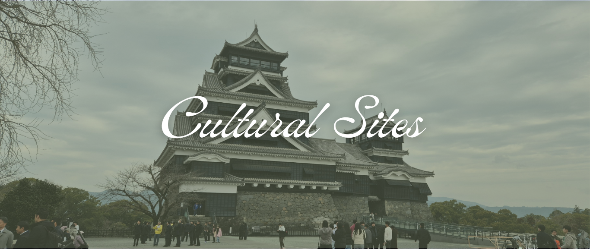

The iconic Kumamoto castle that we saw during the trip was completed in 1607 by Kato Kiyomasa, the first daimyo (feudal lord) of the castle, with great effort and the latest technology. The whole castle has partially turned into a museum, with artifacts stored inside the sealed glass with a description plate on each and every one of it. We learn the unique architecture of Kumamoto Castle, many historical clues remain about how feudal lords lived during the Edo Period.
Sensoji also known as Asakusa Kannon Temple is a Buddhist temple located in Asakusa. It has become one of the most popular tourist spot and the place was filled with colorful stalls and a huge temple at the very end. The Temple houses the small golden image of Kannon and the iconic massive red lantern. There are a lot souveniers, snacks, and there is even a convenience store nearby!